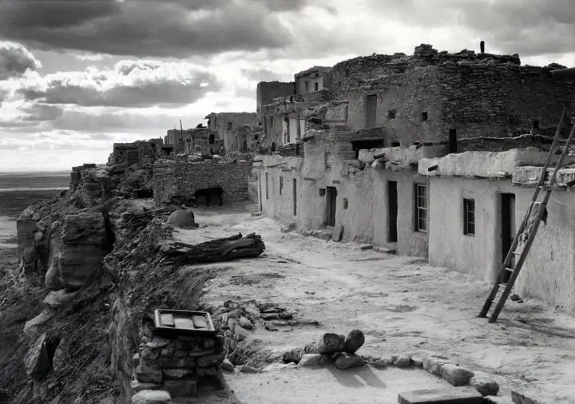
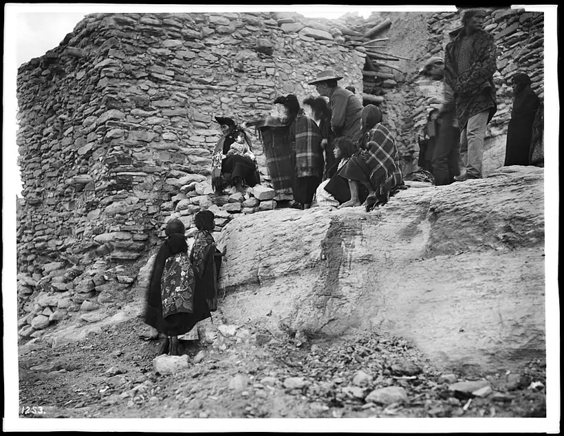
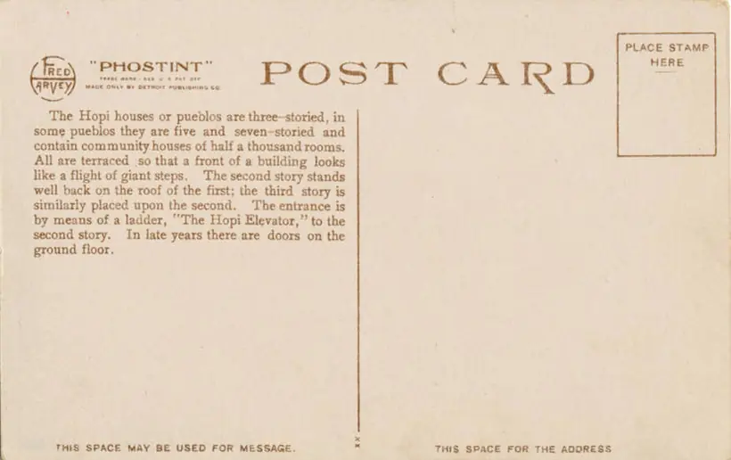

The tradition
Hopi emergence narratives describe previous worlds destroyed for their corruption, and ancestors who survived by sheltering underground with the Ant People, who taught them survival skills. The story is part of a living religious tradition, told in specific contexts and with restrictions.
Maps, diagrams and images






The claim
The ancient-astronaut literature reads the Ant People as extraterrestrials and the underground shelters as bases or craft. That reading requires removing the narrative from its religious frame — where the Ant People are a category of being with their own role in the cosmology — and treating it as a report.
Hopi communities have objected to the use of their traditions in this way, which is a point the literature rarely mentions.
Documented: the narrative, its place in Hopi tradition, and its restrictions.
Documented: the objections of Hopi people to its use in fringe literature.
Not established: any extraterrestrial or subterranean base.
The error: reading a sacred narrative as history and ignoring its owners.
The label: fiction — invention about a tradition, not a finding.
Why it is in the archive
Because it is the clearest case where the fringe reading takes something that is not for sale, and because the ethics and the facts point the same way.
Open resources on this topic
- BookThe Hopi Ant People And Annunaki — Jan Lavrinovski · 2019 (Internet Archive, free to read)
- PapersOpen-access articles: DOAJ · PubMed Central · Internet Archive Scholar
- BooksPublic-domain and borrowable copies: Open Library · Project Gutenberg · Google Books
More images
Cite this page
Momin, S. (2026). The Hopi Ant People. The Larger World Archive. https://drsamonline.github.io/LARGE_GLOBE/hopi-ant-people.htmlMomin, Sohil. “The Hopi Ant People.” The Larger World Archive, 2026, https://drsamonline.github.io/LARGE_GLOBE/hopi-ant-people.html.Momin, Sohil. “The Hopi Ant People.” The Larger World Archive, 2026. https://drsamonline.github.io/LARGE_GLOBE/hopi-ant-people.html.@misc{the2026hopi,
author = {Momin, Sohil},
title = {The Hopi Ant People},
year = {2026},
howpublished = {The Larger World Archive},
url = {https://drsamonline.github.io/LARGE_GLOBE/hopi-ant-people.html},
note = {Last reviewed 20 November 2026}
}Last reviewed 20 November 2026 · Corrections policy · this page is not peer reviewed
Sources for this page
- Wikipedia, “Hopi mythology” — the narrativesen.wikipedia.org
- Wikipedia, “Hopi” — the people and their traditionsen.wikipedia.org
- Wikipedia, “Ancient astronauts” — the reading imposeden.wikipedia.org
- Wikipedia, “Cultural appropriation” — the ethical issueen.wikipedia.org